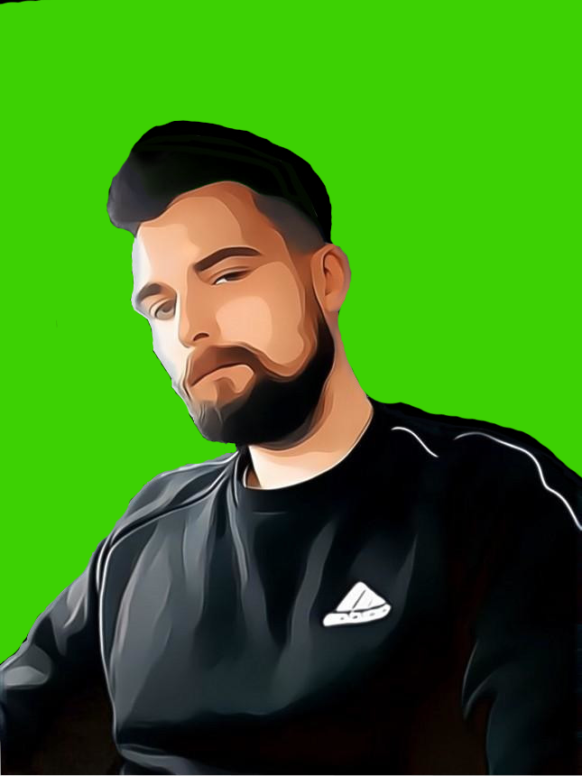
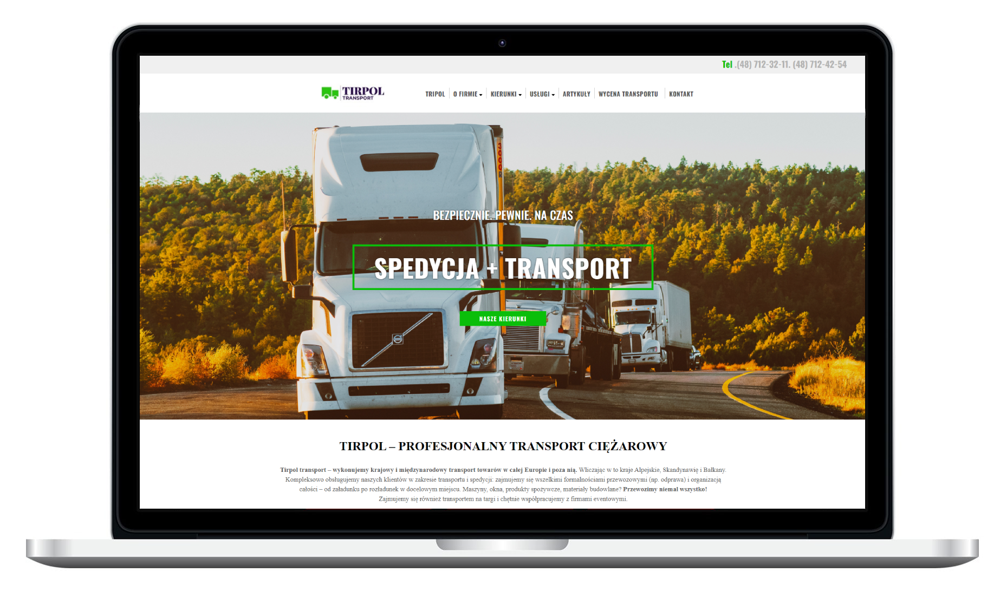

Ta strona zawiera studium przypadku witryny Styles Conference, która obejmuje przegląd projektu, użyte narzędzia i łącza na żywo do oficjalnego produktu.
Link live
Tirpol to wielousługowa firma logistyczna i transportowa, a ja stworzyłem ich wielostronicową stronę internetową, korzystając z moich umiejętności Frontend Web Development, aby zbudować ich obecność w Internecie i wyróżnić się na tle konkurencji oraz zapewnić lepsze wrażenia użytkownika na wszystkich typach urządzeń.
Czerpiąc pomysły z interfejsu użytkownika, odwiedzając różne typy stron internetowych z tej samej branży, aby uzyskać inspirację do zbudowania dobrego interfejsu użytkownika, który przyniesie świetne rezultaty.
Zachęcamy do zapoznania się z projektem, odwiedzając link poniżej.
html
css
javaScript
scss
Responsive Design